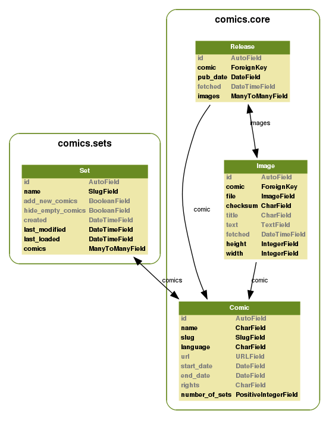

comics development is coordinated through GitHub.
The easiest way to contribute to comics is to register as a user at GitHub, fork the comics project, and start hacking. To get your changes back into comics‘ mainline, send a pull request to jodal at GitHub, or send a mail to comics@jodal.no. Patches accompanied by tests and documentation gives +5 karma and kudos.
A mostly unordered list of things to fix. Patches accepted.
When planning or doing larger changes to comics, notes may be added to the documentation as a change specification.
comics‘ data model is very simple. The core app consists of three models; Comic, Release, and Strip. The sets app adds an additional model named Set.
The above data model diagram was generated using the Django app django_extensions and the following command:
PYTHONPATH=.. python manage.py graph_models \
--settings=comics.settings.dev \
--output=../docs/static/data_model.png --group-models \
core sets
comics got some tests, but far from full test coverage. If you write new or improved tests for comics‘ functionality it will be greatly appreciated.
To run unit tests:
python manage.py test --settings=comics.settings.testing
To run unit tests with statement coverage:
python manage.py test --settings=comics.settings.coverage